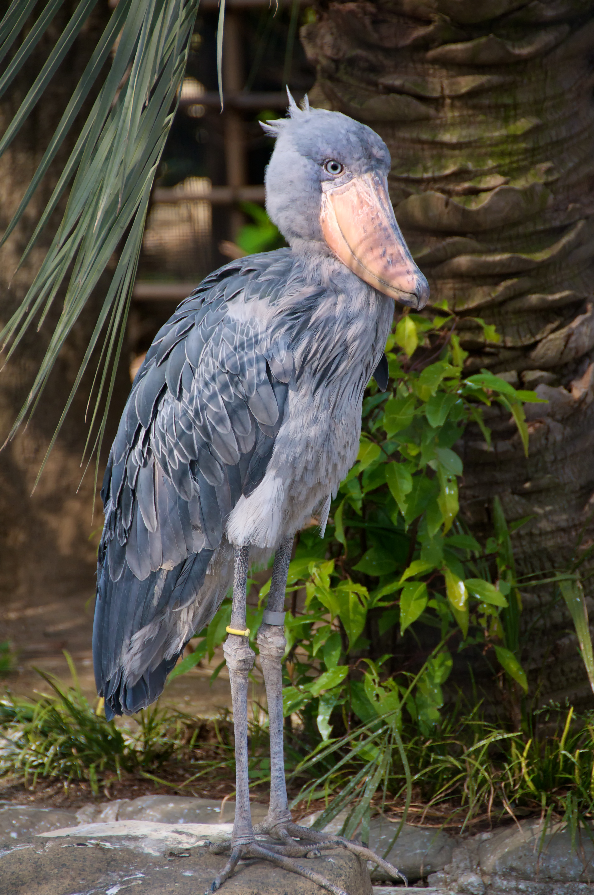

The shoebill (Balaeniceps rex) is a giant wading bird from the swamps of East and central Africa.[3][4] It stands more than a metre tall[1][3][4] and has one of the most unusual faces in the bird world: a huge, pale bill shaped like a wooden clog.[1][3] It looks like a stork, but it has a family all to itself, and its closest living relatives are actually pelicans.[2][3]
Shoebills are patient, solitary hunters.[1][2] They stand almost perfectly still in the shallows, sometimes for hours, then lunge at fish, snakes and even baby crocodiles.[2][3] They are quiet, slow-moving[1][3] and hard to approach, and with only a few thousand left in the wild, they are listed as Vulnerable.[2][3][4] That makes every sighting special.
| Fact | Detail |
|---|---|
| Scientific name | Balaeniceps rex[1][2][3][4] |
| Height | About 1.1 to 1.4 m[1][4] |
| Weight | About 5 to 6 kg[1][3] |
| Wingspan | About 2.3 to 2.6 m[1][3][4] |
| Lifespan | About 35 years in the wild[3] |
| Conservation status | Vulnerable (IUCN)[2][3][4] |
Shoebills live in freshwater swamps and marshes thick with papyrus and floating plants, often where the water has little oxygen.[1][3][4] They are found across East and central Africa, including South Sudan, Uganda, Tanzania, the Democratic Republic of the Congo and Zambia.[1][4] They do not migrate,[4] but they move around as water levels change. One of the best places to see them is Mabamba Swamp in Uganda, and Murchison Falls National Park is another good choice.[4] You would not find one in the wild in Canada, only in zoos.
Shoebills mainly eat fish such as lungfish, catfish and tilapia,[1][3][4] along with eels, water snakes, frogs, turtles, monitor lizards and baby crocodiles.[1][2][3] One study found that catfish made up about 71% of the meals it studied.[2] A shoebill scoops up its prey together with water and weeds, spits out the extra, and swallows the catch whole.[1][2]
Shoebills are listed as Vulnerable.[2][3][4] The main threats are the loss of wetlands to farming, grazing and drainage,[1][4] fires, cattle trampling nests,[3] hunting, and the illegal trade in chicks.[1][3][4] Disturbance at nests and a changing climate make things harder.[4] Protecting swamps such as Mabamba and Bangweulu, and visiting them responsibly, helps keep these birds alive.[4]
© 2026 Set-A ACIT 1620 Group. All Rights Reserved.